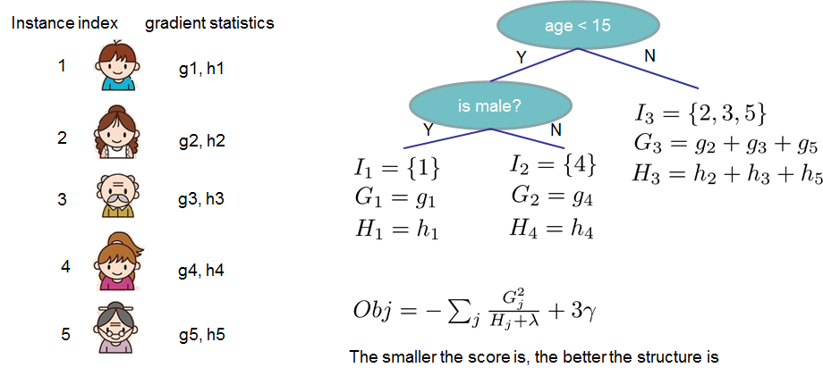

Boosting Method
- Overview on boosting
- Adaboost
- GBDT/Xgboost
- Summary
Overview on boosting
Like bagging, boosting is a general approach that can be applied to many statistical learning methods for regression or classification
Boosting works in a similar way as Bagging, except that the trees are grown sequentially: each tree is grown using information from previously grown trees.
General Boosting Algorithm for regression trees
Set $\hat{f}(x) = 0$ and $r_i=y_i$ for all $i$ in the training set.
For $b= 1,2,...,B$ , repeat:
- Fit a tree $\hat{f}^b$ with $d$ splits ($d + 1$ terminal nodes) to the training data $(X,r)$.
- Update $\hat{f}$ by adding in a shrunken version of the new tree: $$\hat{f}(x) \longleftarrow \hat{f}(x) + \lambda \hat{f}^b(x)$$
- Update the residuals, $$r_i \longleftarrow r_i - \lambda \hat{f}^b(x_i)$$
- Output the model: $$\hat{f}(x)=\sum_{b=1}^B \lambda \hat{f}^b(x)$$
Two core ideas:
- Learning Slowly
- Residual fitting
Three major parameters：
- The number of trees $B$
- The shrinkage parameter $\lambda$
- The number of splits $d$
Adaboost
Core Idea: Combines the outputs of many “weak” classifiers to produce a powerful “committee.”
- Consider a two-class problem, the error rate on the training sample is: $\bar{err}=\frac{1}{N}\sum_{i=1}^N I(y_i\neq G(x_i))$
- The expected error rate on future predictions is: $E_{XY}I(Y\neq G(X))$
- A weak classifier is one whose error rate is only slightly better than random guessing
- The output model is: $$G(x)=sign(\sum_{m=1}^M\alpha_m G_m(x))$$

Detail on adaboost algorithm
- 初始化观测数据点的权重 $w_i=1/N$ , $i=1,2,\cdots,N, \ y_i \in \{-1,1\}$
- For $m=1$ to $M$:
(a) Fit a classfier $G_m(x)$ to the training data using weights $w_i$
(b) 计算 $\epsilon_m=E_{w_m}[1_{y\neq G(x)}]$
(c) 计算 $\alpha_m=\frac{1}{2}ln((1-\epsilon_m)/\epsilon_m)$
(d) 更新权重：$w_{m+1}(x_i,y_i)\leftarrow \frac{w_m(xi,yi)*exp[-\alpha_m y_iG_m(x_i)]}{Z_m}$
- Output the model: $G(x)=sign[\sum_{m=1}^M\alpha_m G_m(x)]$
Additive logistic regression model
Loss Function: $L(y,G(x))=E(e^{-yG(x)})$, minimized at $\frac{\partial E[e^{-yG(x)}]}{\partial E(G(x))}=0$
$E[e^{-yG(x)}]=e^{G(x)}P(y=-1|x)+e^{-G(x)}P(y=1|x)$
$\frac{\partial E[e^{-yG(x)}]}{\partial E(G(x))}=e^{G(x)}P(y=-1|x)-e^{-G(x)}P(y=1|x)$
解得: $G(x)=\frac{1}{2}log\frac{P(y=1|x)}{P(y=-1|x)}$
进一步：$P(y=1|x)=\frac{e^{2G(x)}}{1+e^{2G(x)}}$
我们有 $G(x)$ , 尝试得到新的 $G(x)+cf(x)$:
$L(y,G(x)+cf(x))=E[e^{-y(G(x)+cf(x))}]$
$\approx E[e^{-yG(x)}(1-ycf(x)+c^2y^2f(x)^2/2)]$
这样，$f(x)=argmin_f E_w(1-ycf(X)+c^2/2|x)$
If $c>0$, then maximizing $E_w[yf(x)]$
$c=argmin_c E_w[e^{-cyf(x)}]$
解得：$E_w[-yf(x)e^{-cyf(x)}]=0$
$E_w[1_{y\neq f(x)}]e^c-E_w[1_{y= f(x)}]e^{-c}=0$
得到：$c=\frac{1}{2}ln(\frac{1-\epsilon}{\epsilon})$
XGBoost
在学习问题中，我们经常面临如下形式得目标函数：
$\text{obj}(\theta) = L(\theta) + \Omega(\theta)$
回归问题：$L(\theta) = \sum_i (y_i-\hat{y}_i)^2$
分类问题：$L(\theta) = \sum_i[ y_i\ln (1+e^{-\hat{y}_i}) + (1-y_i)\ln (1+e^{\hat{y}_i})]$
Tree Boosting
$\hat{y}_i = \sum_{k=1}^K f_k(x_i), f_k \in \mathcal{F}$
$\text{obj} = \sum_{i=1}^n l(y_i, \hat{y}_i^{(t)}) + \sum_{i=1}^t\Omega(f_i)$
Optimizes our objective
$\begin{split}\text{obj}^{(t)} & = \sum_{i=1}^n l(y_i, \hat{y}_i^{(t)}) + \sum_{i=1}^t\Omega(f_i) \\ & = \sum_{i=1}^n l(y_i, \hat{y}_i^{(t-1)} + f_t(x_i)) + \Omega(f_t) + \mathrm{constant}\end{split}$
Additive Training
$\begin{split}\hat{y}_i^{(0)} &= 0\\ \hat{y}_i^{(1)} &= f_1(x_i) = \hat{y}_i^{(0)} + f_1(x_i)\\ \hat{y}_i^{(2)} &= f_1(x_i) + f_2(x_i)= \hat{y}_i^{(1)} + f_2(x_i)\\ &\dots\\ \hat{y}_i^{(t)} &= \sum_{k=1}^t f_k(x_i)= \hat{y}_i^{(t-1)} + f_t(x_i)\end{split}$
Consider using mean squared error (MSE)
$\begin{split}\text{obj}^{(t)} & = \sum_{i=1}^n (y_i - (\hat{y}_i^{(t-1)} + f_t(x_i)))^2 + \sum_{i=1}^t\Omega(f_i) \\ & = \sum_{i=1}^n [2(\hat{y}_i^{(t-1)} - y_i)f_t(x_i) + f_t(x_i)^2] + \Omega(f_t) + \mathrm{constant}\end{split}$
Take the Taylor expansion
Recall $f(x+\Delta x)\approx f(x)+f^{'}(x)\Delta x+f^{''}(x)\Delta x^2$
$\text{obj}^{(t)} = \sum_{i=1}^n [l(y_i, \hat{y}_i^{(t-1)}) + g_i f_t(x_i) + \frac{1}{2} h_i f_t^2(x_i)] + \Omega(f_t) + \mathrm{constant}$
这里，$\begin{split}g_i &= \partial_{\hat{y}_i^{(t-1)}} l(y_i, \hat{y}_i^{(t-1)})\\ h_i &= \partial_{\hat{y}_i^{(t-1)}}^2 l(y_i, \hat{y}_i^{(t-1)})\end{split}$
remove all the constants, the specific objective at step $t$ becomes
$\sum_{i=1}^n [g_i f_t(x_i) + \frac{1}{2} h_i f_t^2(x_i)] + \Omega(f_t)$
Model Complexity
Redefinition of the tree $f(x)$ as: $$f_t(x) = w_{q(x)}, w \in R^T, q:R^d\rightarrow \{1,2,\cdots,T\} .$$
$w$ : the vector of scores on leaves
$q$ : function assigning each data point to the corresponding leaf
$T$ : the number of leaves

Define the complexity as: $$\Omega(f) = \gamma T + \frac{1}{2}\lambda \sum_{j=1}^T w_j^2$$

The structure score
Regroup the objective by leaf
$\begin{split}\text{obj}^{(t)} &\approx \sum_{i=1}^n [g_i w_{q(x_i)} + \frac{1}{2} h_i w_{q(x_i)}^2] + \gamma T + \frac{1}{2}\lambda \sum_{j=1}^T w_j^2\\ &= \sum^T_{j=1} [(\sum_{i\in I_j} g_i) w_j + \frac{1}{2} (\sum_{i\in I_j} h_i + \lambda) w_j^2 ] + \gamma T\end{split}$
这里 $I_j = \{i|q(x_i)=j\}$ is the set of indices of data points assigned to the $j$-th leaf
This is sum of T independent quadratic function
$\text{obj}^{(t)} = \sum^T_{j=1} [G_jw_j + \frac{1}{2} (H_j+\lambda) w_j^2] +\gamma T$
这里，$G_j = \sum_{i\in I_j} g_i$, $H_j = \sum_{i\in I_j} h_i$
The best solution for $w_j$ is: $\begin{split}w_j^\ast &= -\frac{G_j}{H_j+\lambda}\\ \text{obj}^\ast &= -\frac{1}{2} \sum_{j=1}^T \frac{G_j^2}{H_j+\lambda} + \gamma T\end{split}$
The last equation measures how good a tree structure $q(x)$ is
Example
Grow tree greedily
For each leaf node of the tree, try to add a split. The change of objective after adding the split is :
$Gain = \frac{1}{2} \left[\frac{G_L^2}{H_L+\lambda}+\frac{G_R^2}{H_R+\lambda}-\frac{(G_L+G_R)^2}{H_L+H_R+\lambda}\right] - \gamma$
If the gain is smaller than $\gamma$ , we would do better not to add that branch
How do we find the best split?
- For each node, enumerate over all features
- For each feature, sorted the instances by feature value
- Use a linear scan to decide the best split along that feature
- Take the best split solution along all the features
- Time Complexity growing a tree of depth K
- It is O(n d K log n): or each level, need O(n log n) time to sort There are d features, and we need to do it for K level
- This can be further optimized (e.g. use approximation or caching the sorted features)
- Can scale to very large dataset